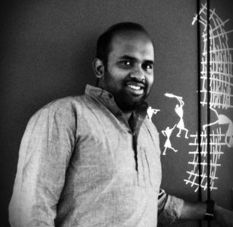

|
 |
K S Sesh KumarResearch FellowBrevan Howard Centre for Financial Analysis Imperial College Business School |
Franklin Allen, arcin T. Kacperczyk and K. S. Sesh Kumar, Adaptive Market Ecology and Conditional Strategy Performance: Evidence from Machine-Learning Market-Timing Strategies, SSRN, 2026 [link]
Franklin Allen, arcin T. Kacperczyk and K. S. Sesh Kumar, Modern Machine Learning Tools in Finance: A Critical Perspective , SSRN, 2025 [link]
Michelangelo Conserva, Marc P. Deisenroth and K. S. Sesh Kumar, The Graph Cut Kernel for Ranked Data, In Transactions on Machine Learning, 2022 [pdf]
Caterina Buizza, César Quilodrán Casas, Philip Nadler, Julian Mack, Stefano Marrone, Zainab Titus, Clémence Le Cornec, Evelyn Heylen, Tolga Dur, Luis Baca Ruiz, Claire Heaney, Julio Amador Diaz Lopez, KS Sesh Kumar, Rossella Arcucci, Data learning: Integrating data assimilation and machine learning , In Journal of Computational Science, 2021 [link]
Michelangelo Conserva, Marc P. Deisenroth and K. S. Sesh Kumar, Submodular Kernels for Efficient Rankings, In arXiv:2105.12356, 2021 [pdf]
Samuel Cohen, K. S. Sesh Kumar and Marc P. Deisenroth, Sliced Multi-Marginal-Monge Optimal Transport, In arXiv:2102.07115, 2021 [pdf]
Riccardo Moriconi, Marc P. Deisenroth and K. S. Sesh Kumar, High-Dimensional Bayesian Optimization with Manifold Gaussian Processes, In Machine Learning, 2020 [pdf]
K. S. Sesh Kumar, F. Bach and T. Pock, Fast Decomposable Submodular Function Minimization using Constrained Total Variation. In Advances of Neural Information Processing Systems(NeurIPS), 2019 [pdf]
Riccardo Moriconi, K. S. Sesh Kumar and Marc P. Deisenroth, High-dimensional Bayesian optimization with projections using quantile Gaussian processes, In Optimization Letters, 2019 [pdf]
K. S. Sesh Kumar and Marc P. Deisenroth, Differentially Private Empirical Risk Minimization with Sparsity-Inducing Norms. In Privacy Preserving Maching Learning (PPML), 2018. [pdf]
K. S. Sesh Kumar and F. Bach, Active-set Methods for Submodular Minimization Problems. In Journal for Machine Learning Research (JMLR), 2017. [pdf]
K. S. Sesh Kumar, A. Barbero, S. Jegelka, S. Sra and F. Bach, Convex Optimization for Parallel Energy Minimization. Technical report, HAL 01123492, 2015. [pdf]
K. S. Sesh Kumar and F. Bach, Maximizing Submodular Functions using Probabilistic Graphical Models. In workshop on Discrete Optimization for Machine Larning (DISCML-NIPS), 2013. [pdf]
K. S. Sesh Kumar and F. Bach, Convex Relaxations for Learning Bounded Treewidth Decomposable Graphs.In Proceedings
of the International Conference on Machine Learning (ICML), 2013. [pdf/supplemenatry, pdf-long-version]
D. A. Gomez Jauregui, P. Horain, M. K. Rajagopal and K. S. Sesh Kumar, Real-Time Particle Filtering with Heuristics for 3D Motion Capture by Monocular Vision, In Proceedings of IEEE International Workshop on Multimedia Signal Processing (MMSP), 2010. [pdf, bibtex]
K. S. Sesh Kumar, Sukesh Kumar and C. V. Jawahar, On Segmentation of Documents in Complex Scripts, In Proceedings of International Conference on Document Analysis and Recognition (ICDAR), 2007. [pdf, bibtex]
K. S. Sesh Kumar, Anoop M. Namboodiri and C.V.Jawahar, Learning Segmentation of Documents with Complex Scripts , In Proceedings of Indian Conference on Computer Vision, Graphics and Image Processing (ICVGIP), 2006. [pdf, bibtex]
Sachin Rawat, K. S. Sesh Kumar, Million Meshesha, Indraneel Deb Sikdar, A. Balasubramanian and C. V. Jawahar, A Semi-Automatic Adaptive OCR for Digital Libraries, In Proceedings of Seventh IAPR Workshop on Document Analysis Systems (DAS), 2006. [pdf, bibtex]
K. S. Sesh Kumar, Anoop M. Namboodiri and C. V. Jawahar, Learning to Segment Document Images , In Proceedings of International Conference on Pattern Recognition and Machine Intelligence (PReMI), 2005 . [pdf, bibtex]
On the Links between Probabilistic Graphical Models and Submodular Optimisation , PhD, l’École normale supérieure, SIERRA-INRIA, 2016.[pdf]